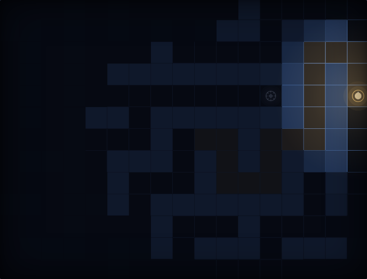
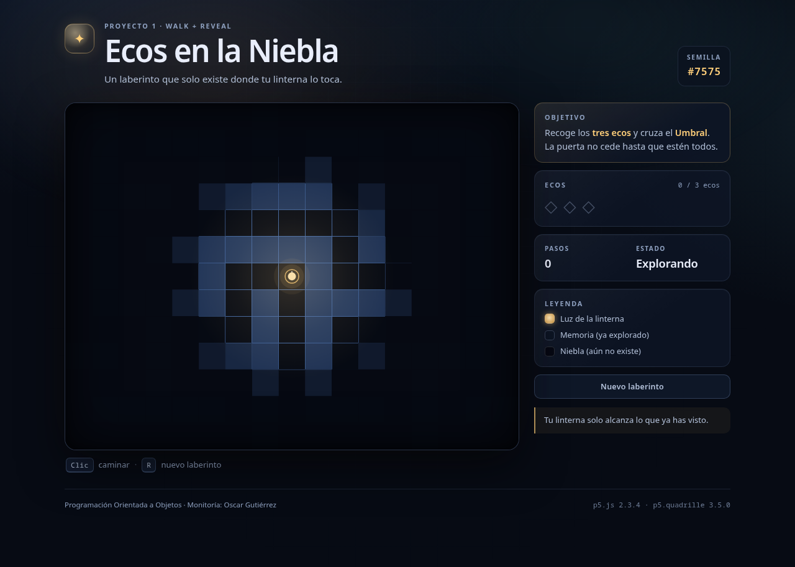
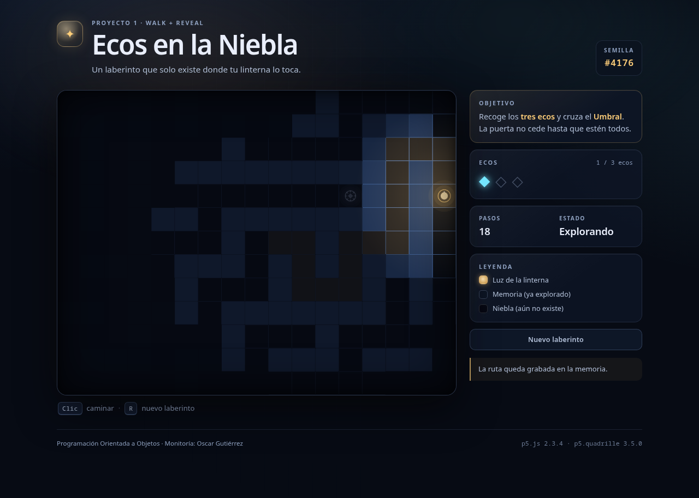

Proyecto 1 · Programación Orientada a Objetos
Ecos en
la Niebla
Juego de exploración sobre una cuadrícula desarrollado con p5.js y p5.quadrille.js. Implementa las mecánicas Walk y Reveal, y emplea el contrato de presentación de Shine para la interfaz visual.
Monitoría: Oscar Gutiérrez · 2026 · p5.js 2.3.4 · p5.quadrille.js 3.5.0

Semilla #4176 · 18 pasos · 1/3 ecos
Descripción general
Exploración, memoria y rutas sobre una cuadrícula.
El jugador controla a un explorador dentro de un laberinto generado
con maze(). La linterna revela el entorno
de forma progresiva y el desplazamiento solo se permite por celdas
que ya han sido exploradas. El objetivo consiste en recoger tres
ecos y llegar al Umbral.
El acceso a la información condiciona el avance.
A diferencia de un juego de acción, el progreso depende de la información que el jugador ha obtenido. La niebla oculta el estado del laberinto, mientras que la memoria de las celdas ya visitadas permite planificar el regreso y elegir la siguiente ruta.

Reglas
Condiciones de juego y de victoria.
La interacción se reduce a seleccionar celdas y recorrer rutas. Las reglas distinguen entre celdas de piso, celdas exploradas y celdas alcanzables.
- El jugador selecciona una celda de piso que ya haya sido explorada.
-
El juego calcula una ruta mediante
path()sobre la máscara de celdas conocidas, y el explorador la recorre paso a paso. Si se selecciona otra celda durante el recorrido, la ruta se recalcula desde la última celda alcanzada. - Cada paso actualiza la niebla y, cuando corresponde, recoge un eco.
- Al reunir los tres ecos, el Umbral se abre y puede cruzarse para finalizar la partida.
- La tecla R o el botón del panel generan un laberinto nuevo con otra semilla.

Demostración
Ejecución del juego.
La demostración utiliza la semilla #4176, por lo que reproduce el mismo laberinto y la misma distribución de ecos. El juego se abre en una pestaña independiente.
Aspectos para observar
Al seleccionar una celda iluminada, la ruta se calcula únicamente sobre el área explorada. La niebla se actualiza en cada paso y conserva la información de las celdas visitadas. En el panel lateral se reflejan el contador de ecos y el estado de la partida. Si se intenta cruzar el Umbral sin los tres ecos, el juego lo impide y muestra un aviso.
Mecánica 1
Walk: planificación y ejecución de rutas.
La mecánica no calcula el movimiento a partir de las teclas. Solicita al tablero una ruta y consume la respuesta paso a paso, lo que separa la validación del desplazamiento.
planTo(target) {
if (target.equals(this.explorer.cell)) {
return { ok: false, reason: 'same' };
}
const steps = this.dungeon.path(this.explorer.cell, target);
if (steps.length === 0) {
return { ok: false, reason: 'unreachable' };
}
this.plan = steps;
this.progress = 0;
this.moving = true;
return { ok: true, steps: steps.length };
}La ruta se obtiene del tablero.
dungeon.path() consulta la máscara
known. Si el destino es un muro,
una celda no explorada o la misma celda actual, devuelve una
lista vacía. Walk solo inicia el desplazamiento cuando la
respuesta contiene al menos un paso.
La planificación y la animación son responsabilidades
distintas. Un clic durante el recorrido reemplaza el plan desde
la última celda alcanzada. deltaTime
regula la velocidad y lerp interpola
la posición visual, mientras que la posición lógica y la de
dibujo se mantienen separadas.
Mecánica 2
Reveal: visibilidad, memoria y restricciones de paso.
La niebla no es solo un efecto de dibujo. Al revelar una celda de piso, la mecánica la habilita en la máscara que utiliza Walk, de modo que la visibilidad determina el conjunto de rutas posibles.
const distance = Math.hypot(
row - center.row,
col - center.col
);
if (distance > radius) continue;
const cell = new Cell(row, col);
this.explored[row][col] = true;
this.lit[row][col] = true;
this.dungeon.unlock(cell); // habilita el piso para Walk
const edge = this._smoothstep(fadeStart, radius, distance);
this.targetAlpha[row][col] = memoryAlpha * edge;Luz actual
Radio de la linterna en la posición actual.
Memoria
Celdas ya vistas; siguen siendo transitables.
Niebla
Celdas no exploradas; no son transitables.
explored[][] registra la memoria de la
linterna, lit[][] el radio actual y
alpha[][] la opacidad que se interpola
para suavizar el borde. La llamada
dungeon.unlock(cell) incorpora la
celda a la máscara de paso que utiliza Walk.
Presentación visual
Shine como apoyo de presentación.
Las mecánicas evaluadas son Walk y Reveal. Shine se utiliza para el
acabado visual: la niebla, los ecos y el Umbral son celdas que
reciben una función de dibujo y el estado por
options.
function veilDisplay(options) {
const alpha = options.alpha[options.row][options.col];
const half = options.cellLength / 2;
noStroke();
fill(6, 9, 18, alpha);
rect(-half, -half, options.cellLength, options.cellLength);
}
// options.origin = 'center' se pasa dentro de options,
// no como parámetro de drawQuadrille.
La celda no almacena estado: lee los valores de
options. El tiempo y el estado visual
se reciben como parámetros, y una misma función se reutiliza en
las 221 celdas de la niebla. El contrato permite componer
efectos, como se describe en el capítulo Shine.
Alcance
Shine no modifica las reglas ni el estado del juego. Solo presenta la información que Reveal ya calculó, por lo que no se contabiliza como una tercera mecánica.
Decisiones de diseño
Criterios adoptados durante el desarrollo.
Las decisiones siguientes explican el comportamiento actual del juego y las alternativas que se descartaron durante la definición del alcance.
Punto de inicio
Comenzar en la esquina dejaba media área de luz fuera del
tablero. _pickSpawn() elige la celda
de piso más cercana al centro para que el primer radio sea
visible por completo.
Niebla con memoria
Los tres estados permiten planificar el regreso y hacen que el mapa se construya durante la exploración, no que sea un dato inicial.
Semilla reproducible
El HUD muestra la semilla y el parámetro
?seed=N permite repetir un laberinto
durante la sustentación.
Sin recursos externos
El juego utiliza formas, colores y glifos. Las librerías están
incluidas en lib/, por lo que
funciona sin conexión.
Alternativas descartadas
Se descartaron las minas y la condición de derrota porque
desplazaban el foco hacia el buscaminas; el movimiento con
flechas porque no ejercitaba path(); y
el temporizador porque añadía una tercera mecánica de recursos
fuera del alcance de la entrega.
Resultados
Resultados de la implementación y de la verificación.
El juego implementa las dos mecánicas propuestas y cumple las
condiciones de victoria definidas. La verificación se realizó en
escritorio y en una ventana de 420 píxeles, tanto desde un servidor
local como mediante file://.
Resultados funcionales
El jugador puede desplazarse por las celdas exploradas,
replanificar una ruta, revelar la niebla, recoger los ecos y
cruzar el Umbral una vez abierto. El reinicio genera un
laberinto nuevo con otra semilla, y la semilla puede fijarse
mediante el parámetro ?seed=N.
Resultados de la verificación
Se comprobaron catorce casos funcionales: clics en muros, celdas no exploradas y celdas aisladas; replanificación; recogida de ecos; Umbral sellado y abierto; victoria; reinicio; panel lateral; y adaptación a 420 píxeles. No se registraron errores en la consola.
Limitaciones identificadas
La luz utiliza un radio euclidiano y atraviesa paredes. Tampoco se incorporaron audio ni pruebas unitarias automatizadas. Estas limitaciones se retoman en el trabajo futuro.
Trabajo futuro
Líneas de mejora previstas.
El alcance del Proyecto 1 deja varias extensiones identificadas. Las siguientes se ordenan según su relación con las mecánicas y con el siguiente proyecto del curso.
Línea de visión
Sustituir el radio euclidiano por shadowcasting para que la luz no atraviese paredes y la información recordada adquiera mayor importancia.
Shine como mecánica
Convertir la presentación en una mecánica completa, con efectos
por celda para agua, fuego, ecos y portales, compuestos mediante
stack.
Behave y Meet
En el Proyecto 3, los ecos y el Umbral pueden modelarse como objetos con estado y comportamiento, y responder a mensajes en lugar de ramificar por tipo.
Ampliaciones del juego
Niveles autorales, aceite de linterna, audio, minimapa y un modo de alto contraste.
Ingeniería
Pruebas unitarias de Dungeon, Cell y Reveal; despliegue en GitHub Pages o GitLab Pages.
Conclusiones
Conclusiones y fuentes consultadas.
Las dos mecánicas se integran mediante la máscara
known: Walk produce nueva información y
Reveal habilita nuevas rutas. La separación en clases permitió
modificar la niebla, la interfaz y los objetos sin alterar el
comportamiento general del juego.
Conclusiones técnicas
La planificación sobre known convierte
la niebla en una restricción real y no en un efecto visual. La
memoria de las celdas exploradas permite planificar el regreso,
y la separación entre posición lógica y posición de dibujo
mantiene estable la animación.
El contrato de presentación de Shine facilitó la reutilización de las funciones de dibujo en la niebla, los ecos y el Umbral sin trasladar estado a las celdas.
Conclusiones del proceso
El proyecto permitió aplicar encapsulamiento, composición y responsabilidades únicas en un caso concreto. La verificación funcional y la revisión del código mostraron que las decisiones de nombres, configuración y límites entre clases reducen el costo de los cambios.
Artículos y fuentes externas consultadas
Charalambos, J. P. (2024). p5.quadrille.js: P5.js quadrille library. SoftwareX, 27, 101838. https://doi.org/10.1016/j.softx.2024.101838; y Grid-Based Game Programming, capítulos Walk, Reveal y Shine.
Martin, R. C. (2008). Clean Code. Prentice Hall; Fowler, M. (2018). Refactoring (2.ª ed.). Addison-Wesley; Sicart, M. (2008). Defining game mechanics. Game Studies, 8(2).
Informe completo: INFORME.md · Demostración: index.html.